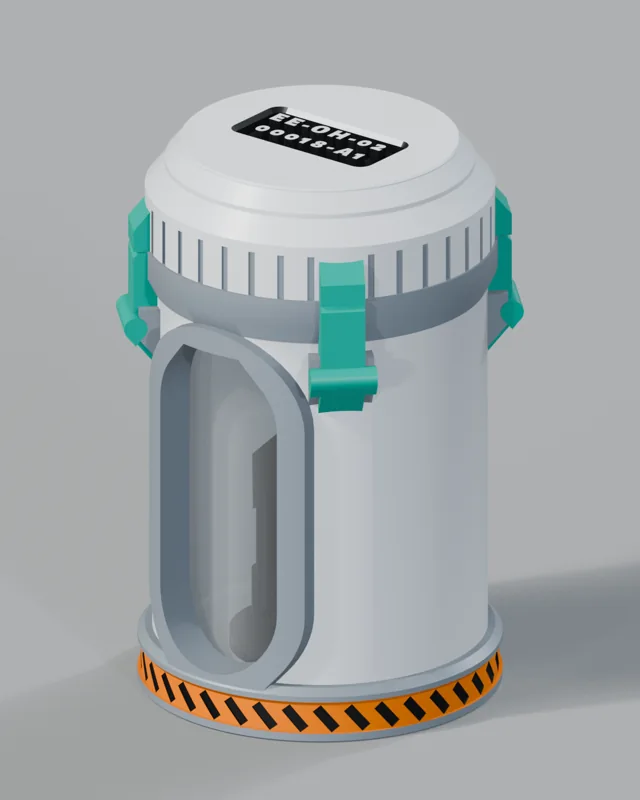

RELIC-02 · STL preview
Lab Quarantine Canister
Screw-lid closure; keepers align over the levers. Display only; not food-safe or watertight. Not a real containment vessel.
In development — physical print/fit validation and final availability TBD
Files, materials and print specifications
- Version
- v4
- Files planned in bundle
- body.stl, figure.stl, lid.stl, PRINT-GUIDE.txt, README.txt
- Size
- Body 74 × 74 × 108 mm; lid 71 × 71 × 21.5 mm. Assembled dimensions: TBD.
- Material
- PLA printed parts; clear acrylic tube bought separately.
- Supports
- Off in documented slicer profile; test fit required.
- Print settings
- Ender 3 profile; 0.4 mm nozzle; PLA; 0.20 mm layers; 3 perimeters; 15% gyroid; supports off (documented slicer profile, not a physical-print guarantee).
- Estimated print time
- 14h 31m
- Estimated filament
- 129.5 g
- Finish
- Off-white body; grey hardware; teal levers; orange hazard stripe (finish plan).
- Lead time
- TBD — print time is not dispatch or finishing time.
- Digital delivery
- TBD — no download or checkout in this preview.
Clear acrylic tube: 50.80 mm OD / 44.45 mm ID; cut 104.5 mm. Tube and bought hardware are not STL files. Times and grams are PrusaSlicer estimates for all listed base parts, including the reference figure; printer settings change results. Figures shown are reference contents, not a promise of included physical contents.
Source: RELIC-02 lab-quarantine-print-v4 README and accompanying PRINT-GUIDE. Model checks/slicer runs are not a proven physical product test.